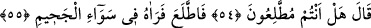
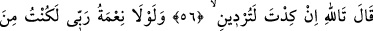
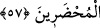
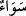

cezalandırılacaksınız, demektir. Mânâ: (Arkadaşı o zât şöyle diyor:) ... Hayır,
diriltilmeyiz ve cezalandırılmayız!
54, 55. (O zât, dünyâda geçmiş olan hâdiseyi bu şekilde anlattıktan sonra Allah
Teâlâ orada bulunanlara:) Siz işin gerçeğine vâkıf mısınız? dedi. İşte o zaman
konuşan baktı, arkadaşını cehennemin ortasında gördü.
“(O zât, dünyâda geçmiş olan hâdiseyi bu şekilde anlattıktan sonra Allah Teâlâ
orada bulunanlara:) Siz işin gerçeğine vâkıf mısınız? dedi.” Bu kimse bu sözüyle
hikaye ettiği konudaki sadakat ve doğruluğunu anlatmak istiyor. Arkadaşları ona sen
bizden daha iyi tanıyorsun sen bir bak! dediler. “İşte o zaman konuşan baktı,
arkadaşını cehennemin ortasında gördü.”
Bir şeyin ortası, bütün yönlere eşit olduğu için “ olarak isimlendirilmiştir. İbn
Abbâs (r.a.) der ki: “Cennette cennet ehlinin cehennemdekileri göreceği pencereler
vardır. Cennettekiler buradan cehennemdekilere bakar ve onlarla münazara ederler. Zira
cehennemdekilere yaptıkları sitem ve azar, cennettekiler için ayrı bir sevinç ve
mutluluktur.
Fakir (Bursevî) der ki şüphe yok ki cennet yücelerin yücesinde cehennem ise
aşağılardadır. Yüksek kat, teras ve kulelerde olanlar aşağıdakileri gördükleri gibi
cennettekiler de cehennemi ve cehennem ehlini görürler. Cennet ehli mü’minler ve
merhametli kimseler olmasına rağmen cehennem ehlinin azabına sevinmeleri ise
kıyametin intikam, mutlak ve ezici güç sahibi olan Allah Teâlâ’nın “müntekım”,
“kahhâr” ve benzeri isimlerinin tecelli ettiği bir gün olmasından dolayıdır. İşte
mü’minler, dünyada kendi aralarında birbirlerine karşı merhametli; kâfirlere karşı çetin
oldukları gibi “Beraberinde bulunanlar da kâfirlere karşı çetin, kendi aralarında
merhametlidirler” (el-Fetih 48/29). Aynı şekilde Allah Teâlâ’nın merhamet etmediği
düşmanlara da merhamet etmezler. Zira Allah onlara merhamet etseydi elbette onları
cennetine koyardı.
Allah Teâlâ’dan sevabını ve cennetini istiyoruz.
56, 57. «Yemin ederim ki, sen az daha beni de helâk edecektin. Rabbimin nimeti